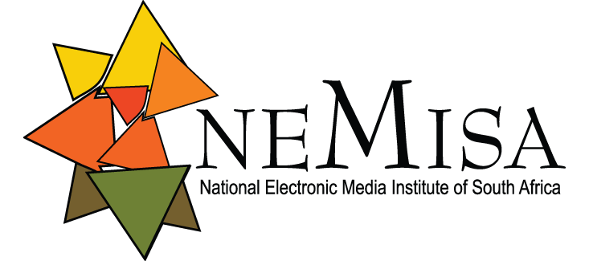
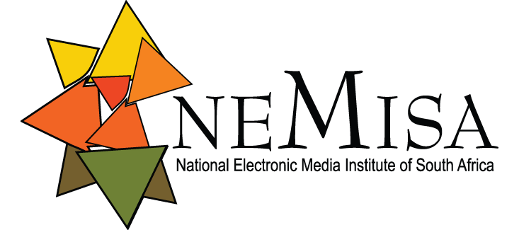

Far North Youth Development Initiative (FNYDI) is a registered NPO dedicated to empowering youth through education, creativity, and community-based programs since 2001.
To bridge the digital divide by fostering a tech-savvy, self-sufficient society through youth-centered learning and skills development.
We have served thousands of young people across Limpopo through digital skills training, arts enrichment, and employment opportunities through EPWP.
We offer hands-on, accredited learning experiences in digital skills, arts & crafts, and employment through EPWP community projects.
Free industry-aligned training powered by Cisco Networking Academy, NEMISA, and University of Limpopo. Courses include coding, networking, IT support, and more.
Register NowEmpowering youth through creativity — from painting and sculpture to community exhibitions and mentorship programs.
Learn MoreThrough EPWP, FNYDI supports youth involvement in public service roles such as admin support, digital literacy drives, and environmental cleanup campaigns.
Learn More 


Courses are accredited or endorsed by Cisco Networking Academy and supported by the NEMISA Digital Skills Initiative.
Join thousands of young people who have transformed their lives through our programs.